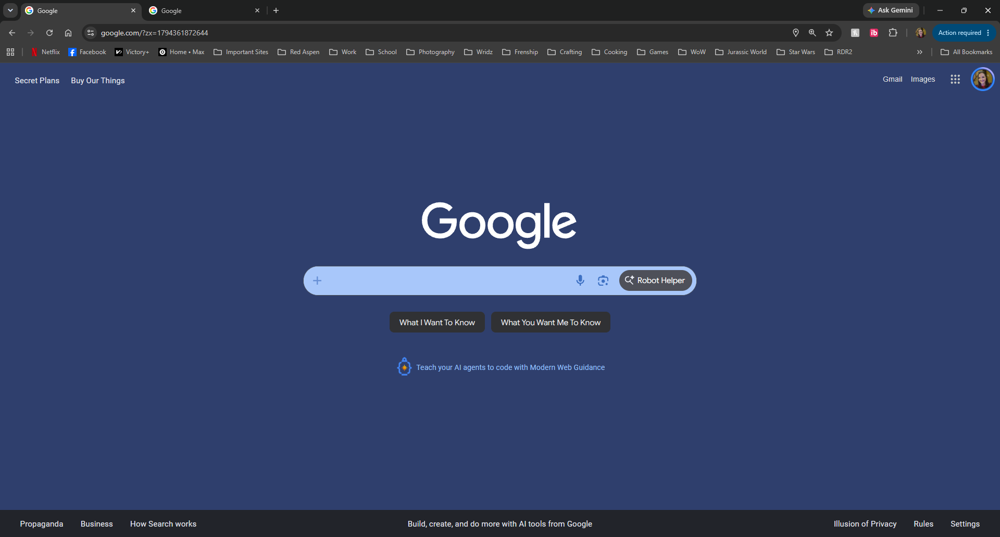

My Dev Tools Vandalism
I used browser developer tools to temporarily "vandalize" a website. Below is a screenshot showing my changes. These edits only appeared on my computer and did not affect the actual website.

What I "Vandalized"
I chose to use the browser's developer tools to transform the popular Google homepage into a silly search engine with a new look. :
- Text edits: I changed several text elements all over the page. I made the text say funny things that still gave an idea of what the link would do. I changed the search buttons, AI mode, about, store, privacy, terms, and advertising texts.
- CSS edits: I changed the background color to a medium blue shade. I also adjusted the colors of the search bar and the icons within the search bar.
- Amusement: I found it amusing to see google looking different and having text phrases that made me laugh.
- Understanding: I did not immediately understand why or how to change the main "google", however have reading into the code more, I realized it was an image. I did some research and discovered I could have changed it, but I decided not to go that route to keep the webpage recognizable with all the other edits.
- Why I changed what I did: I changed the text content to create a humorous effect on the website. The color's I chose just looked nice while I was editing and I did not have a specific reason other than that.
- HTML & CSS Relationship: I was able to see how the HTML structures the elements on the page (like the text values inside the buttons) while the CSS completely dictates how those elements look to the user.
- Takeaway: This exercise gave me a much stronger understanding of developer tools as a live sandbox. Being able to isolate specific elements using the inspector tool and test layout modifications instantly will be incredibly helpful when I am building, debugging, and styling my own webpages from scratch.